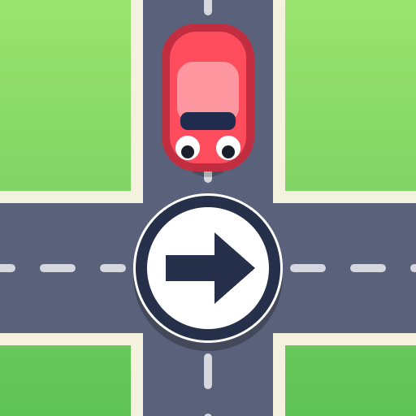
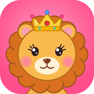

Tero
Hold to orbit, release to fling. Chain perfect catches up through the stars.
Discover Tero →
Terrifico
Place the signs, save the traffic. A colorful puzzle where every car must get home.
Discover Terrifico →
Rico's Safari Salon
Bathe, pamper and dress up muddy safari animals, then snap their makeover photo.
Discover Rico →